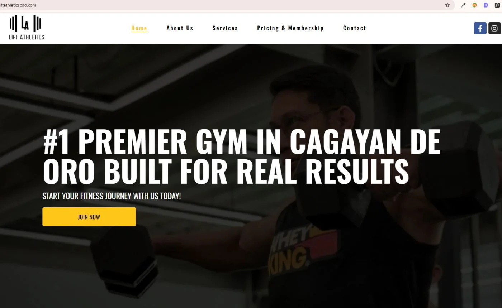
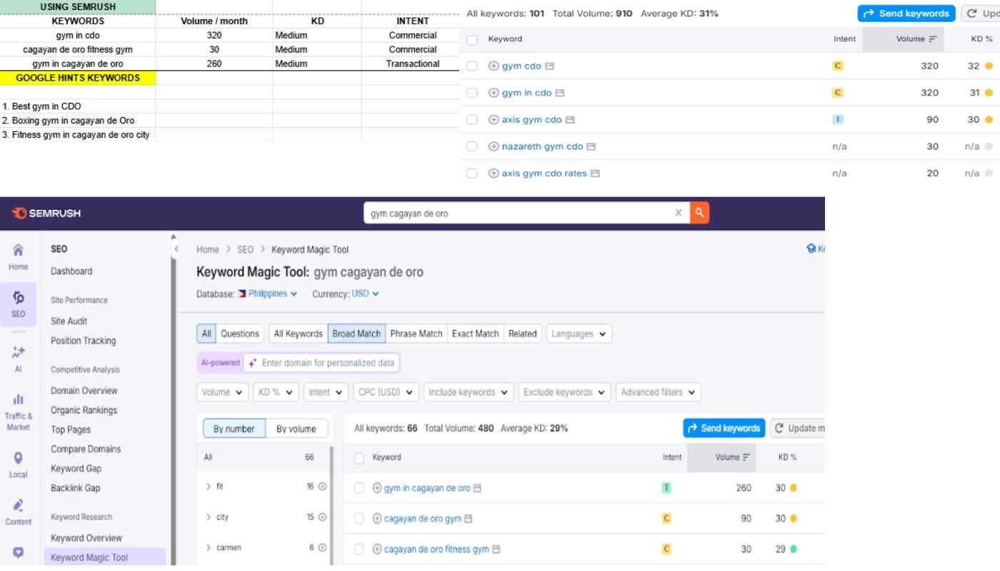

- No website at all
- No Google Business Profile
- Only Facebook and Instagram
- No tracking, no data, zero online visibility
- Full WordPress Elementor website from scratch
- GBP created and fully optimised from zero
- GSC, GA4 and GTM all configured
- Screaming Frog audit before touching anything
- Keyword strategy and on page SEO across priority pages
- Real organic traffic visible in GSC and GA4
- GBP active and generating local discovery
- 5 to 6 months of live performance data available
- Phase 2 pages being planned based on query data

Starting from nothing meant the very first thing I did was set up tracking. GSC and GA4 went in before I changed a single thing on the site. Without a clean baseline from day one you cannot prove that anything you do later made a difference. This is not optional — it is the foundation of measurable SEO.
Keyword research in SEMrush was focused on what people in Cagayan de Oro actually search when they are looking for a gym. Local markets have their own search patterns. I cannot just apply the same keywords you would use for a gym in Sydney.
I ran a full Screaming Frog crawl before making any changes to the site. This gave me a complete picture of what already existed and what needed fixing, so I could prioritise by impact rather than guessing where to start.
For the GBP I built the entire listing from scratch. No existing profile, no previous category, nothing. I selected the right primary category, added complete service listings with individual descriptions, wrote a keyword informed business description, and uploaded a full set of images.

Set up Google Search Console, GA4 and Google Tag Manager from scratch before making any changes. Verified site ownership in GSC, submitted the sitemap, and confirmed pages were being indexed. Configured GA4 via GTM to capture traffic data from day one. This gave a clean baseline to measure every subsequent change against.
Ran a full Screaming Frog crawl before editing a single page. This gave me a complete picture of heading hierarchy issues, missing or duplicated meta titles and descriptions, internal link coverage gaps, and image alt text coverage across all pages at once. From there I created a prioritised fix list ordered by page importance and traffic potential.

Applied on page SEO across all priority pages in the order determined by the audit. Keyword aligned H1s, heading structure built around search intent, meta titles and descriptions written for click through, and internal links with contextual anchor text. Installed and configured Rank Math with local schema markup for the gym's location. Compressed all images to WebP with descriptive alt text on every image.
Built the full WordPress Elementor website from scratch. There was no existing site to work with. The domain was new and the site was a blank canvas. Every page, URL structure, and on page element was created to align with the keyword strategy that was built in the research phase.
Built the GBP listing from nothing. Primary gym category, complete service listings with descriptions for each program offered, a business description written with local keywords naturally included, full NAP details, and a full set of image uploads. The business had no Google presence at all before this. The GBP is now the primary local discovery channel for gym searches in Cagayan de Oro.
Most junior candidates have no real data to show. Having six months of live GSC data documenting a site go from zero Google presence to real organic traffic is significant proof. This is not early stage data where you are explaining away the results. This is a real trend showing the strategy worked.
Which gym related searches are generating visibility. Confirms keyword strategy is producing the right associations in Google's index for this local market.
High impression, low click queries are the next meta title improvement targets. Unexpected queries showing up are new page opportunities for Phase 2 planning.
Traffic by channel. Organic search is now a visible and growing source. This channel did not exist in the data at all before the setup was done.
Engagement and session data shows which pages users actually read versus bounce from. Low engagement pages are content improvement targets for Phase 2.
This project is still active. Six months of live traffic data means Phase 2 page planning can now be done from evidence rather than guesswork. The GSC data shows exactly which search terms are generating impressions and which ones have volume worth building a dedicated page for.
The first phase was about building the foundation and getting the tracking in place. Phase 2 is about expanding on what the data shows is actually working.
What the data informs
- Which service searches have volume without a dedicated page
- Which location queries are showing up in the data
- What questions people are searching that need content
- Which pages have high impressions and low CTR needing meta work
Likely additions in Phase 2
- Individual service pages for specific programs
- Location pages based on query data
- FAQ content from actual search queries
- Internal linking strengthened to new pages
Set up tracking before doing anything else. Without a clean baseline from launch day you cannot prove any of the work you do after that point made a difference. Tracking goes in first, always.
Audit the site before touching any page. Screaming Frog shows you what is wrong across the whole site at once so you fix the right things in the right order rather than making educated guesses.
For a brand new online presence, the GBP is the fastest path to local visibility. Organic rankings take months to build. The map pack responds to GBP optimisation much faster for a business starting from zero.
Six months of GSC data is real evidence. Being able to explain what it means in context, not just display the chart, is what separates someone who understands SEO from someone who just runs reports.